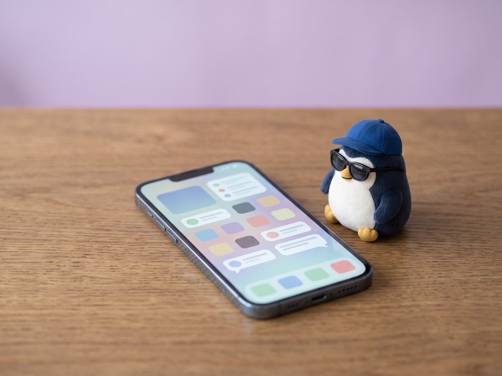

I hate social media, but I will try X and Reddit for just 1 month 🫣

I say this myself, but I am a very small-hearted person.
I worry about small things, I cry a lot, and I often fall into despair about life.
I seriously worry about things that make people say "Huh, you worry about that?"
If I share information, I want to share something I can be a pro at.
Then, what can I talk about at a pro level?
When I thought about it, the answer came right away.
Worrying. Crying. Falling into despair about life.
With these, maybe I will not lose to anyone.
I am a little proud of how small my heart is.
And one more thing.
I also do not want to keep this story only inside Japan.
I am sure there are people all over the world who worry about small things.
So, if I can, I want to share things that reach the whole world.
So I thought of X and Reddit.
Reddit is a message board born in America, and people from all over the world gather in English in rooms for each topic (subreddits).
It is a place where you can write your worries as they are, without showing your face or name.
But to be honest, I am scared.
I really hate social media.
Social media creates comparison.
The moment I open it, I compare myself with someone.
And I feel powerless.
This is not "maybe it will happen," but something I already know.
Doing it when I know this feels kind of reckless.
It also feels meaningless.
With these half-hearted feelings, I have been unsure for a long time.
Nothing starts if I just stay unsure, so I decided.
For just 1 month, I will try sharing anonymously on X and Reddit.
I will not show my real name or face
I will share small stories like "I worry about this"
After 1 month, I will come back to this blog and write about my state of mind
If it gets hard, I can stop.
That is also a fine result of the test.
Actually, this blog has a comment box at the very bottom of each article.
If you choose "📮 Only to the owner," it reaches only me.
Please send requests like "I want to read this kind of article" from there too.
I will read all the comments I get.
I will be happy if it becomes a place where we bring our small worries together, not a one-way street.
What will happen if I, who hate social media, do social media?
I do not know yet either if my heart will break or if it will be surprisingly fun.
1 month later (around the middle of November), I will come back here again.
I want to write about my feelings 1 month later here again.
As of October 29, I have not been able to post even once.
I started at a new workplace this month, so maybe it is not that kind of time at all.
I have no time at all to post on social media or share information.
But I think it may be just barely OK to write what I learned at work, as a story about that industry.